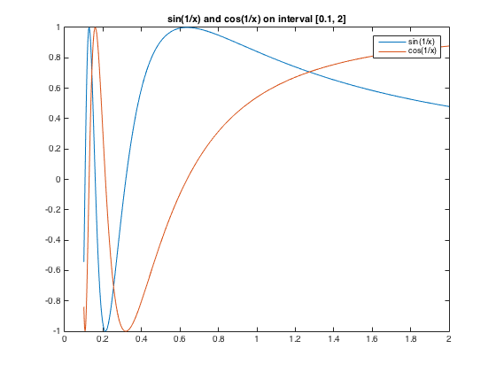

Student - Gurpreet Singh
CSc 301 - HW #4 November 5, 2015
Contents
Problem 1 Part C
% determine the number of intervals needed to approximate integ from 0 to 2 % of (1/(x + 4)) to within 10^-5 and computer the approximation using the % composite gaussian quadrature rule. % Part C n = 0; prev = 0; appr = 1; while (abs(prev - appr) > 10^-5) n = n + 1; prev = appr; % three-point Gaussian quadrature rule appr = gaussquad3(@func, 0, 2, n); end fprintf('The number of intervals required is - %f\n', sin_approx); fprintf('Approximatation of the integral from 0 to 2 of (1/(x + 4)) - %f\n', sin_approx);
The number of intervals required is - 1.145557 Approximatation of the integral from 0 to 2 of (1/(x + 4)) - 1.145557
Problem 2
% Plot f(x) = sin(1/x) and g(x) = cos(1/x) on [0.1 , 2]. Use adaptive % quadrature to approximate the integrals of f(x)dx and g(x) dx to within % 10^-3. syms x; a = 0.1; b = 2; f(x) = sin(1/x); g(x) = cos(1/x); k = linspace(a, b, 1000); f_vals = f(k); g_vals = g(k); figure plot(k, f_vals); hold on; plot(k, g_vals); title('sin(1/x) and cos(1/x) on interval [0.1, 2]') legend('sin(1/x)','cos(1/x)') B = 10^(-3); m = 3; sin_approx = double(AdaptQNC(f, a, b, m, B)); cos_approx = double(AdaptQNC(g, a, b, m, B)); fprintf('Approximate value of sin(1/x) between 0.1 and 2 - %f\n', sin_approx); fprintf('Approximate value of cos(1/x) between 0.1 and 2 - %f\n', cos_approx);
Approximate value of sin(1/x) between 0.1 and 2 - 1.145557 Approximate value of cos(1/x) between 0.1 and 2 - 0.673823